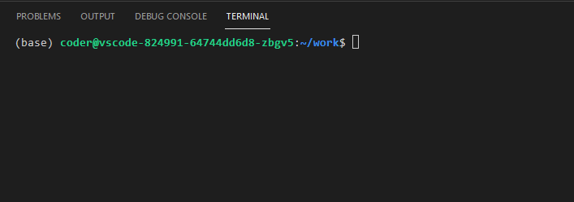

Linux 101
Introduction à l’utilisation du terminal Linux, un outil essentiel pour le data scientist qui s’intéresse à la mise en production.
Le terminal Linux
Pourquoi s’intéresser au terminal Linux ?
Le terminal (ou ligne de commande) est une console interactive qui permet de lancer des commandes. Il existe dans la plupart des systèmes d’exploitation (y compris avec Windows !). Mais comme il a la réputation d’être austère et complexe, on utilise plutôt des interfaces graphiques pour effectuer nos opérations informatiques quotidiennes.
Pourtant, avoir des notions quant à l’utilisation d’un terminal est une vraie source d’autonomie, dans la mesure où celui-ci permet de gérer bien plus finement les commandes que l’on réalise. Pour les data scientists qui s’intéressent aux bonnes pratiques et à la mise en production, sa maîtrise est essentielle. Les raisons sont multiples :
les interfaces graphiques des logiciels sont généralement limitées par rapport à l’utilisation du programme en ligne de commande. C’est par exemple le cas de
Gitet deDocker. Dans les deux cas, seul le client en ligne de commande permet de réaliser toutes les opérations permises par le logiciel ;mettre un projet de data science en production nécessite d’utiliser un serveur, qui le rend disponible en permanence à son public potentiel. Or là où Windows domine le monde des ordinateurs personnels, une large majorité des serveurs et des infrastructures cloud fonctionnent sous
Linux;les principaux langages de programmation des data scientists (, , etc. ) visent à simplifier l’exécution d’opérations complexes par le biais de la ligne de commande mais héritent néanmoins de sa logique. Utiliser la ligne de commande permet de gagner en aisance dans son travail de programmation ;
plus généralement, une utilisation régulière du terminal est source d’une meilleure compréhension du fonctionnement d’un système de fichiers et de l’exécution des processus sur un ordinateur. Ces connaissances s’avèrent très utiles dans la pratique quotidienne du data scientist, qui nécessite de plus en plus de développer dans différents environnements d’exécution.
Dans le cadre de ce cours, on s’intéressera particulièrement au terminal Linux puisque l’écrasante majorité, si ce n’est l’ensemble, des serveurs de mise en production s’appuient sur un système Linux.
Environnement de travail
Différents environnements de travail peuvent être utilisés pour apprendre à se servir d’un terminal Linux :
le SSP Cloud. Dans la mesure où les exemples de mise en production du cours seront illustrées sur cet environnement, nous recommandons de l’utiliser dès à présent pour se familiariser. Le terminal est accessible à partir de différents services (RStudio, Jupyter, etc.), mais nous recommandons d’utiliser le terminal d’un service VSCode, dans la mesure où se servir d’un IDE pour organiser notre code est en soi déjà une bonne pratique ;
Katacoda, un bac à sable dans un système Ubuntu, la distribution Linux la plus populaire ;
sur Windows : Git Bash (émulation minimaliste d’un terminal Linux), qui est installée par défaut avec
Git.
Introduction au terminal
Lançons un terminal pour présenter son fonctionnement basique. On prend pour exemple le terminal d’un service VSCode lancé via le SSP Cloud (Application Menu tout en haut à gauche de VSCode -> Terminal -> New Terminal). Voici à quoi ressemble le terminal en question.

Décrivons d’abord les différentes inscriptions qui arrivent à l’initialisation :
(base): cette inscription n’est pas directement liée au terminal, elle provient du fait que l’on utilise un environnementconda. Nous verrons le fonctionnement des environnements virtuels en détail dans le chapitre sur la portabilité ;coder@vscode-824991-64744dd6d8-zbgv5: le nom de l’utilisateur (icicoder) et le nom de la machine (ici, un conteneur, notion que l’on verra là encore dans le chapitre sur la portabilité~/work: le chemin du répertoire courant, i.e. à partir duquel va être lancée toute commande. On comprendra mieux la signification de ce chemin dans la section suivante.
Pour éviter la lourdeur des images et permettre de copier/coller facilement les commandes, on représentera dans la suite du tutoriel (et du cours) le terminal du service VSCode par des bandes de texte sur fond noir, comme dans l’exemple suivant. Les lignes commençant par un $ sont celles avec lesquelles une commande est lancée, et les lignes sans $ représentent le résultat d’une commande. Attention à ne pas inclure le $ lorsque vous lancez les commandes, il sert simplement à différencier celles-ci des résultats.
terminal
$ echo "une petite illustration"une petite illustrationNotions de filesystem
Le terme filesystem (système de fichiers) désigne la manière dont sont organisés les fichiers au sein d’un système d’exploitation. Cette structure est hiérarchique, en forme d’arbre :
- elle part d’un répertoire racine (le dossier qui contient tous les autres) ;
- contient des dossiers ;
- les dossiers peuvent contenir à leur tour des dossiers (sous-dossiers) ou des fichiers.
Intéressons nous à la structure du filesystem Linux standard.

Source : commons.wikimedia.org
.jpg){kind=link}
Quelques observations :
- la racine (root) sur Linux s’appelle
/, là où elle s’appelleC:\par défaut sur Windows ; - le répertoire racine contient un ensemble de sous-dossiers, dont la plupart ont un rôle essentiellement technique. Il est tout de même utile d’en décrire les principaux :
/bin: contient les binaires, i.e. les programmes exécutables ;/etc: contient les fichiers de configuration ;/home: contient l’ensemble des dossiers et fichiers personnels des différents utilisateurs. Chaque utilisateur a un répertoire dit “HOME” qui a pour chemin/home/<username>Ce répertoire est souvent représenté par le symbole~. C’était notamment le cas dans l’illustration du terminal VSCode ci-dessus, ce qui signifie qu’on se trouvait formellement dans le répertoire/home/coder/work,coderétant l’utilisateur par défaut du service VSCode sur le SSP Cloud.
Chaque dossier ou fichier est représenté par un chemin d’accès, qui correspond simplement à sa position dans le filesystem. Il existe deux moyens de spécifier un chemin :
- en utilisant un chemin absolu, c’est à dire en indiquant le chemin complet du dossier ou fichier depuis la racine. En Linux, on reconnaît donc un chemin absolu par le fait qu’il commence forcément par
/. - en utilisant un chemin relatif, c’est à dire en indiquant le chemin du dossier ou fichier relativement au répertoire courant.
Comme tout ce qui touche de près ou de loin au terminal, la seule manière de bien comprendre ces notions est de les appliquer. Les exercices de fin de chapitre vous permettront d’appliquer ces concepts à des cas pratiques.
Lancer des commandes
Le rôle d’un terminal est de lancer des commandes. Ces commandes peuvent être classées en trois grandes catégories :
- navigation au sein du filesystem
- manipulations de fichiers (créer, lire, modifier des dossiers/fichiers)
- lancement de programmes
Manipulation de fichiers
Les commandes suivantes permettent de manipuler le filesystem. Il en existe beaucoup d’autres, mais elles couvrent la plupart des besoins.
| Commande | Description |
|---|---|
cp fichierdepart fichierarrivee |
copier (CoPy) un fichier |
mv fichierdepart fichierarrivee |
déplacer (MoVe) un fichier |
rm nomdufichier |
supprimer (ReMove) un fichier |
cat nomdufichier |
afficher le contenu du fichier |
mkdir nomdudossier |
créer (MaKe DIRectory) un dossier |
touch nomdufichier |
créer un fichier vide |
Dans la mesure où il est généralement possible de réaliser toutes ces opérations à l’aide d’interfaces graphiques (notamment, l’explorateur de fichiers), celles-ci sont moins essentielles que celles permettant de se déplacer dans le filesystem. Nous vous recommandons malgré tout de les pratiquer également, et ce pour plusieurs raisons :
- effectuer un maximum d’opérations via le terminal permet de bien comprendre son fonctionnement et donc de gagner en autonomie ;
- en devenant efficient sur ces commandes, vous vous rendrez compte que manipuler le filesystem via le terminal est en fait plus rapide que via une interface graphique ;
- lorsque l’on est amené à manipuler un terminal pour interagir avec un serveur, il n’y a souvent pas la moindre interface graphique, auquel cas il n’y a pas d’autre choix que d’opérer uniquement à partir du terminal.
Lancement de programmes
Le rôle du terminal est de lancer des programmes. Lancer un programme se fait à partir d’un fichier dit exécutable, qui peut être de deux formes :
- un binaire, i.e. un programme dont le code n’est pas lisible par l’humain ;
- un script, i.e. un fichier texte contenant une série d’instructions à exécuter. Le langage du terminal Linux est le
shell, et les scripts associés ont pour extension.sh.
Dans les deux cas, la syntaxe de lancement d’une commande est : le nom de l’exécutable, suivi d’éventuels paramètres, séparés par des espaces. Par exemple, la commande python monscript.py exécute le binaire python et lui passe comme unique argument le nom d’un script .py (contenu dans le répertoire courant), qui va donc être exécuté via Python. De la même manière, toutes les commandes vues précédemment pour se déplacer dans le filesystem ou manipuler des fichiers sont des exécutables et fonctionnent donc selon ce principe. Par exemple, cp fichierdepart fichierarrivee lance le binaire cp en lui passant deux arguments : le chemin du fichier à copier et le chemin d’arrivée.
Dans les exemples de commandes précédents, les paramètres étaient passés en mode positionnel : l’exécutable attend des arguments dans un certain ordre, ce qui est clair dans le cas de cp par exemple. Mais le nombre des arguments n’est pas toujours fixé à l’avance, du fait de la présence de paramètres optionnels. Ainsi, la plupart des exécutables permettent le passage d’arguments optionnels, qui modifient le comportement de l’exécutable, via des flags. Par exemple, on a vu que cp permettait de copier un fichier à un autre endroit du filesystem, mais peut-on copier un dossier et l’ensemble de son contenu avec ? Nativement non, mais l’ajout d’un paramètre le permet : cp -R dossierdepart dossierarrivee permet de copier récursivement le dossier et tout son contenu. Notons que les flags ont très souvent un équivalent en toute lettre, qui s’écrit quant à lui avec deux tirers. Par exemple, la commande précédente peut s’écrire de manière équivalente cp --recursive dossierdepart dossierarrivee. Il est fréquent de voir les deux syntaxes en pratique, parfois même mélangées au sein d’une même commande.
Variables d’environnement
Comme tout langage de programmation, le langage shell permet d’assigner et d’utiliser des variables dans des commandes. Pour afficher le contenu d’une variable, on utilise la commande echo, qui est l’équivalent de la fonction print en Python ou en R.
terminal
$ MY_VAR="toto"
$ echo $MY_VARtotoQuelques remarques importantes :
- la syntaxe pour la création de variable est précise : aucun espace d’un côté comme de l’autre du
=; - en
Shell, on ne manipule que du texte. Dans notre exemple, on aurait donc pu écrireMY_VAR=totopour le même résultat. Par contre, si l’on veut assigner à une variable une valeur contenant des espaces, les guillemets deviennent indispensables pour ne pas obtenir un message d’erreur ; - pour accéder à la valeur d’une variable, on la préfixe d’un
$.
Notre objectif avec ce tutoriel n’est pas de savoir coder en shell, on ne va donc pas s’attarder sur les propriétés des variables. En revanche, introduire ce concept était nécessaire pour en présenter un autre, essentiel quant à lui dans la pratique quotidienne du data scientist : les variables d’environnement. Pour faire une analogie — un peu simpliste — avec les langages de programmation, ce sont des sortes de variables “globales”, dans la mesure où elles vont être accessibles à tous les programmes lancés à partir d’un terminal, et vont modifier leur comportement.
La liste des variables d’environnement peut être affichée à l’aide de la commande env. Il y a généralement un grand nombre de variables d’environnement prééxistantes ; en voici un échantillon obtenu à partir du terminal du service VSCode.
terminal
$ envSHELL=/bin/bash
HOME=/home/coder
LANG=en_US.UTF-8
CONDA_PYTHON_EXE=/home/coder/local/bin/conda/bin/pythonCette liste illustre la variété des utilisations des variables d’environnements :
- la variable
$SHELLprécise l’exécutable utilisé pour lancer le terminal ; - la variable
$HOMEdonne l’emplacement du répertoire utilisateur. En fait, le symbole~que l’on a rencontré plus haut référence cette même variable ; - la variable
LANGspécifie la locale, un concept qui permet de définir la langue et l’encodage utilisés par défaut par Linux ; - la variable
CONDA_PYTHON_EXEexiste uniquement parce que l’on a installécondacomme système de gestion de packagesPython. C’est l’existence de cette variable qui fait que la commandepython mon_script.pyva utiliser comme binaire la version dePythonqui nous intéresse.
Une variable d’environnement essentielle, et que l’on est fréquemment amené à modifier dans les applications de data science, est la variable $PATH. Elle consiste en une concaténation de chemins absolus, séparés par :, qui spécifie les dossiers dans lesquels Linux va chercher les exécutables lorsque l’on lance une commande, ainsi que l’ordre de la recherche. Regardons la valeur du $PATH sur le terminal du service VSCode.
terminal
$ echo $PATH/home/coder/local/bin/conda/bin:/home/coder/local/bin/conda/condabin:/home/coder/local/bin/conda/envs/basesspcloud/bin:/home/coder/local/bin/conda/bin:/usr/local/sbin:/usr/local/bin:/usr/sbin:/usr/bin:/sbin:/binL’ordre de recherche est de gauche à droite. C’est donc parce que le dossier /home/coder/local/bin/conda/bin est situé en premier que l’interpréteur Python qui sera choisi lorsque l’on lance un script Python est celui issu de Conda, et non celui contenu par défaut dans /usr/bin par exemple.
L’existence et la configuration adéquate des variables d’environnement est essentielle pour le bon fonctionnement de nombreux outils très utilisés en data science, comme Git ou encore Spark par exemple. Il est donc nécessaire de comprendre leur fonctionnement pour pouvoir lire des documentations techniques et adapter la configuration d’un serveur en cas de bug lié à une variable d’environnement manquante ou mal configurée.
Permissions
La sécurité est un enjeu central en Linux, qui permet une gestion très fine des permissions sur les différents fichiers et programmes.
Une différence majeure par rapport à d’autres systèmes d’exploitation, notamment Windows, est qu’aucun utilisateur n’a par défaut les droits complets d’administrateur (root). Il n’est donc pas possible nativement d’accéder au parties sensibles du système, ou bien de lancer certains types de programme. Par exemple, si l’on essaie de lister les fichiers du dossier /root, on obtient une erreur.
terminal
$ ls /rootls: cannot open directory '/root': Permission deniedDans la pratique du quotidien, certaines opérations telles que l’installation de binaires ou de packages nécessitent cependant des droits administrateurs. Dans ce cas, il est d’usage d’utiliser la commande sudo (Substitute User DO), qui permet de prendre les droits root le temps de l’exécution de la commande.
terminal
$ sudo ls /rootLe dossier /root étant vide, la commande ls renvoie une chaîne de caractères vide, mais nous n’avons plus de problème de permission. Notons qu’une bonne pratique de sécurité, en particulier dans les scripts shell que l’on peut être amenés à écrire ou exécuter, est de limiter l’utilisation de cette commande aux cas où elle s’avère nécessaire.
Une autre subtilité concerne justement l’exécution de scripts shell. Par défaut, qu’il soit créé par l’utilisateur ou téléchargé d’internet, un script n’est pas exécutable.
- 1
- Créer le script test.sh (vide)
- 2
- Exécuter le script test.sh
bash: ./test.sh: Permission deniedC’est bien entendu une mesure de sécurité pour éviter l’exécution automatique de scripts potentiellement malveillants. Pour pouvoir exécuter un tel script, il faut attribuer des droits d’exécution au fichier avec la commande chmod. Il devient alors possible d’exécuter le script classiquement.
- 1
-
Donner des droits d’exécution au script
test.sh - 2
- Exécuter le script test.sh
Les scripts shell
Maintenant que nous avons vu les variables et les permissions, revenons sur les scripts shell précédemment évoqués. A l’instar d’un script Python, un script shell permet d’automatiser une série de commandes lancées dans un terminal. Le but de ce tutoriel n’est pas de savoir écrire des scripts shell complexes, travail généralement dévolu aux les data engineers ou les sysadmin (administrateurs système), mais de comprendre leur structure, leur fonctionnement, et de savoir lancer des scripts simples. Ces compétences sont essentielles lorsque l’on se préoccupe de mise en production. A titre d’exemple, comme nous le verrons dans le chapitre sur la portabilité, il est fréquent d’utiliser un script shell comme entrypoint d’une image docker, afin de spécifier les commandes que doit lancer le conteneur lors de son initialisation.
Illustrons leur structure ainsi que leur fonctionnement à l’aide d’un script simple. Considérons les commandes suivantes, que l’on met dans un fichier monscript.sh dans le répertoire courant.
terminal
$ #!/bin/bash
$ SECTION=$1
$ CHAPTER=$2
$ FORMATION_DIR=/home/coder/work/formation
$ mkdir -p $FORMATION_DIR/$SECTION/$CHAPTER
$ touch $FORMATION_DIR/$SECTION/$CHAPTER/test.txtAnalysons la structure de ce script :
- la première ligne est classique, elle se nomme le shebang : elle indique au système quel interpréteur utiliser pour exécuter ce script. Dans notre cas, et de manière générale, on utilise
bash(Bourne-Again SHell, l’implémentation moderne dushell) ; - les lignes 2 et 3 assignent à des variables les arguments passés au script dans la commande. Par défaut, ceux-ci sont assignés à des variables
noùnest la position de l’argument, en commençant à 1 ; - la ligne 4 assigne un chemin à une variable
- la ligne 5 crée le chemin complet, défini à partir des variables créées précédemment. Le paramètre
-pest important : il précise àmkdird’agir de manière récursive, c’est à dire de créer les dossiers intermédiaires qui n’existent pas encore ; - la ligne 6 crée un fichier texte vide dans le dossier créé avec la commande précédente.
Exécutons maintenant ce script, en prenant soin de lui donner les permission adéquates au préalable.
terminal
$ chmod +x monscript.sh
$ bash monscript.sh section2 chapitre3
$ ls formation/section1/chapitre2/text.txtOpération réussie : le dossier a bien été créé et contient un fichier test.txt.
Pour en savoir plus, une Cheat Sheet sur bash très bien réalisée.
Gestionnaire de paquets
Une différence fondamentale entre Linux et Windows tient à la manière dont on installe un logiciel. Sur Windows, on va chercher un installateur (un fichier exécutable en .exe) sur le site du logiciel, et on l’exécute. En Linux, on passe généralement par un gestionnaire de packages qui va chercher les logiciels sur un répertoire centralisé, à la manière de pip en Python par exemple.
Pourquoi cette différence ? Une raison importante est que, contrairement à Windows, il existe une multitude de distributions différentes de Linux (Debian, Ubuntu, Mint, etc.), qui fonctionnent différemment et peuvent avoir différentes versions. En utilisant le package manager (gestionnaire de paquets) propre à la distribution en question, on s’assure de télécharger le logiciel adapté à sa distribution. Dans ce cours, on fait le choix d’utiliser une distribution Debian et son gestionnaire de paquets associé apt. Debian est en effet un choix populaire pour les servers de part sa stabilité et sa simplicité, et sera également familière aux utilisateurs d’Ubuntu, distribution très populaire pour les ordinateurs personnels et qui est basée sur Debian.
L’utilisation d’apt est très simple. La seule difficulté est de savoir le nom du paquet que l’on souhaite installer, ce qui nécessite en général d’utiliser un moteur de recherche. L’installation de paquets est également un cas où il faut utiliser sudo, puisque cela implique souvent l’accès à des répertoires protégés.
terminal
$ sudo apt install treeReading package lists... Done
Building dependency tree... Done
Reading state information... Done
The following NEW packages will be installed:
tree
0 upgraded, 1 newly installed, 0 to remove and 0 not upgraded.
...Désinstaller un package est également simple : c’est l’opération inverse. Par sécurité, le terminal vous demande si vous êtes sûr de votre choix en vous demandant de tapper la lettre y (yes) ou la lettre n. On peut passer automatiquement cette étape en ajoutant le paramètre -y
terminal
$ sudo apt remove -y treeReading package lists... Done
Building dependency tree... Done
Reading state information... Done
The following packages will be REMOVED:
tree
0 upgraded, 0 newly installed, 1 to remove and 0 not upgraded.
...Avant d’installer un package, il est toujours préférable de mettre à jour la base des packages, pour s’assurer qu’on obtiendra bien la dernière version.
terminal
$ sudo apt updateHit:1 http://deb.debian.org/debian bullseye InRelease
Hit:2 http://deb.debian.org/debian bullseye-updates InRelease
Hit:3 http://security.debian.org/debian-security bullseye-security InRelease
Reading package lists... Done
Building dependency tree... Done
Reading state information... Done
All packages are up to date.Tricks
On l’a dit et redit : devenir à l’aise avec le terminal Linux est essentiel et demande de la pratique. Il existe néanmoins quelques astuces qui peuvent grandement simplifier la vie et donc faciliter la prise de bonnes habitudes.
La première est l’autocomplétion. Dès lors que vous écrivez une commande contenant un nom d’exécutable, un chemin sur le filesystem, ou autre, n’hésitez pas à utiliser la touche TAB (touche au-dessus de celle qui verrouille la majuscule) de votre clavier. Dans la majorité des cas, cela va vous faire gagner un temps précieux.
La deuxième est de parcourir l’historique de commandes : la flèche vers le haut (↑) permet de parcourir l’historique des commandes que vous avez précédemment exécutées. Chaque fois que vous appuyez sur cette touche, le terminal affiche la dernière commande exécutée, en remontant dans l’historique à chaque appui supplémentaire.
La troisième, dans le même esprit que la deuxième mais plus élaborée, est la recherche inverse dans l’historique de commandes avec les touches Ctrl+R. Lorsque vous appuyez sur Ctrl+R, une invite de recherche apparaît. Vous pouvez alors commencer à taper des caractères de la commande que vous recherchez. Le terminal cherchera dans l’historique des commandes la dernière commande correspondant à ce que vous avez tapé, et la montrera à l’écran. Si ce n’est pas la commande exacte que vous cherchez, vous pouvez continuer à taper pour affiner la recherche ou appuyer à nouveau sur Ctrl+R pour rechercher la commande précédente correspondant à vos critères.
Une quatrième astuce, qui n’en est pas vraiment une, est de lire la documentation d’une commande lorsque l’on n’est pas sûr de sa syntaxe ou des paramètres admissibles. Via le terminal, la documentation d’une commande peut être affichée en exécutant man suivie de la commande en question, par exemple : man cp. Comme il n’est pas toujours très pratique de lire de longs textes dans un petit terminal, on peut également chercher la documentation d’une commande sur le site man7.